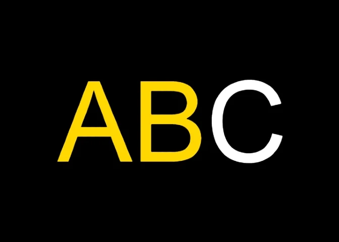

This project is not available for mobile use. Please try again on a larger display
Completion Date: 4/1/25
Development Time: 3 Months
This project originated as a means to learn api development, but it quickly grew to a long term, three part project. Creating
the api itself was fairly simple. It’s been roughly two years since I last used Python, so I decided to refresh my knowledge and
learn Python’s FastAPI library to create the api. The purpose of this application’s programming interface is to store simple
highscore JSON data, and thus the interface only uses a single GET and POST request. Learning FastAPI and creating the interface
only took a couple days, and so did creating the frontend of my application.
A major problem arose once development of my api was complete; because I did not have root access to the server hosting my website,
I had no way to properly install my api’s dependencies. To solve this, I purchased a VPS and migrated all of my frontend data onto
my new server. I decided it would be a great learning opportunity to set up the backend from scratch as opposed to using a hosting
panel, so I spent the next two months learning Ubuntu, NGINX, and Gunicorn. I had very limited experience operating an OS exclusively
with a command line interface, so progress was very slow. It's been two years since the last time I touched linux, and I had to look
up how to do simple tasks such as creating groups and changing permissions. Learning Gunicorn was easy as all it does is process
requests sent to my api from the reverse proxy. Learning NGINX (the aforementioned reverse proxy) was much more difficult. I wanted to
make full use of url rewrites and upstream servers to keep my website as clean and intuitive as possible, so I took a lot of help from
several blog posts and forums. After I had the backend set up how I liked, I used Certbot to register my domain for an SSL certificate.
Once all was said and done, my knowledge and comfort in backend development grew a tremendous amount.
The last step was to update the frontend of my website. While I am not the most artistically inclined person, my knowledge of user
interface design has increased since I first launched my website. I started by completely redesigning how mobile games function on
the website. I found it much more intuitive to open up mobile games in separate tabs instead of overlaying the game on the current
page. I was also able to simplify my code by eliminating all use of Javascript; device detection and application launching is all
achieved via HTML and CSS. Next, I rewrote a little bit of CSS that dictates the size of various elements relative to the browser
window. This made the website look consistent across all screen sizes. After that, I simplified the game icons on the home page to
make them appear cleaner when viewed as small images. Finally, I updated my logo. This was very difficult, and the logo may be
modified in the near future. I wanted to stick with my previous dragonfly design and clean it up using vector art, but I struggled
to make a design simple enough to look clean in small resolutions. I then settled for an entirely different logo which is meant to
vaguely resemble the unofficial Javascript logo. The logo shows what seems to be an incomplete class or object definition, similar to
how this website is an ever-growing collection of projects.
Overall, I am thrilled with this project. I feel like I have learned more in these last three months than I had all year. I intend to
continue to investigate backend web development, as there is a seemingly endless amount of knowledge to obtain in the field and this
project has greatly piqued my interest in the subject.
5/19/25: World Record Modification
Guinness World Records requires that the worlds fastest alphabet typist must put a space between each letter, so I made a modified
version of this game with no leaderboard that utilizes this requirement. The modified game can be played
here.